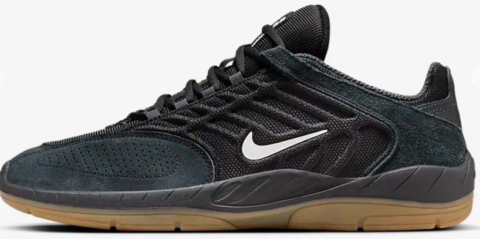
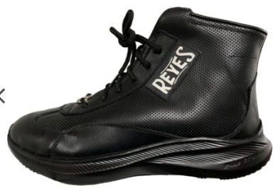
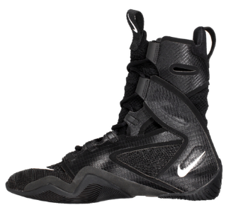

Low-Top Boxing Shoes provide a light feel. They have little fabric and support but offer the greatest speed advantage. However, they offer little ankle support. They are used by elusive fighters wtih a hit and run fighting style.

Mid-Top Boxing Shoes provide a balance between a light feel and support. They are used by boxers with a preference for movement. They are used by boxers with a pivoting style who like to use head movement to stay in the pocket.

High-Top Boxing Shoes provide great support fort brawler type fighters. They are build to plant the foot and swing. They are often used by strong punchers who prefer to stand in the pocket and trade.